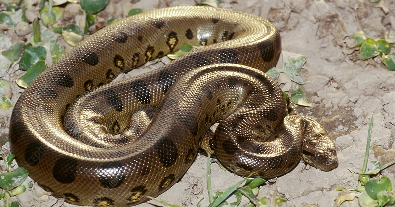

Esta increíble especie es una de las más populares entre las serpientes de agua ya que es la serpiente más grande del mundo por su peso y grosor. Se distribuye en Venezuela, Colombia, Guyana, Brasil, Bolivia, Paraguay, norte de Argentina y Uruguay, se puede encontrar en pantanos de selva tropical y ríos. Es un reptil grande con cuerpo cilíndrico y unas escamas muy brillantes. Con hábitos acuáticos que puede permanecer sumergida por mucho tiempo en el fondo de los ríos y en las noches puede salir en busca de alimentos, es una serpiente que le gusta la soledad.
